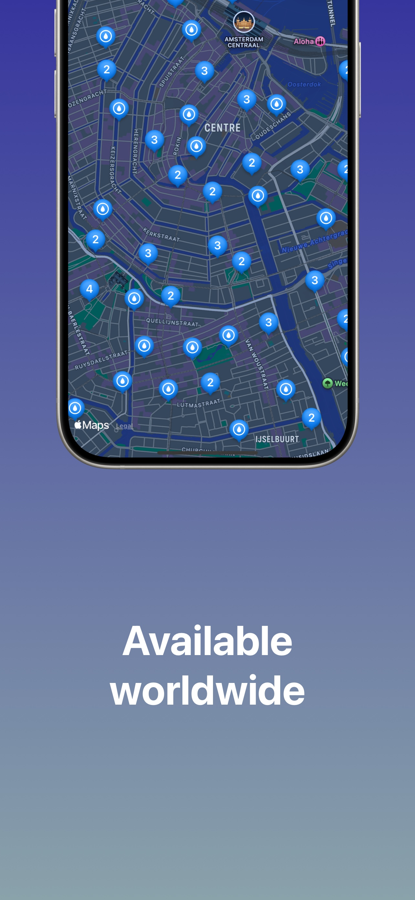
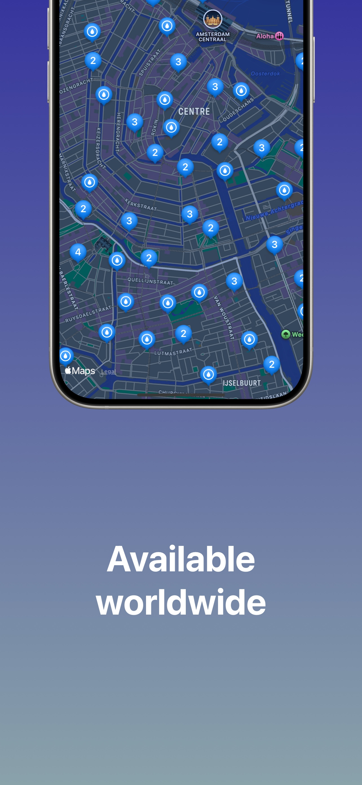
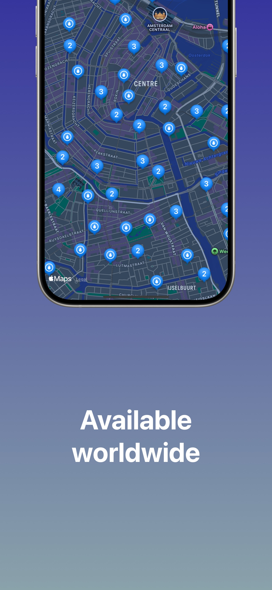

Water Mapper
Your way to find nearby waterfountains in the Netherlands.
- Works offline
- Check distance to the waterfountains
- Start navigation straight from the app
- Mutliple data sources (PRO)
- On-device location validation (PRO)

Looking for a way to contact?
You can through Bluesky or email watermapper@sems.dev
